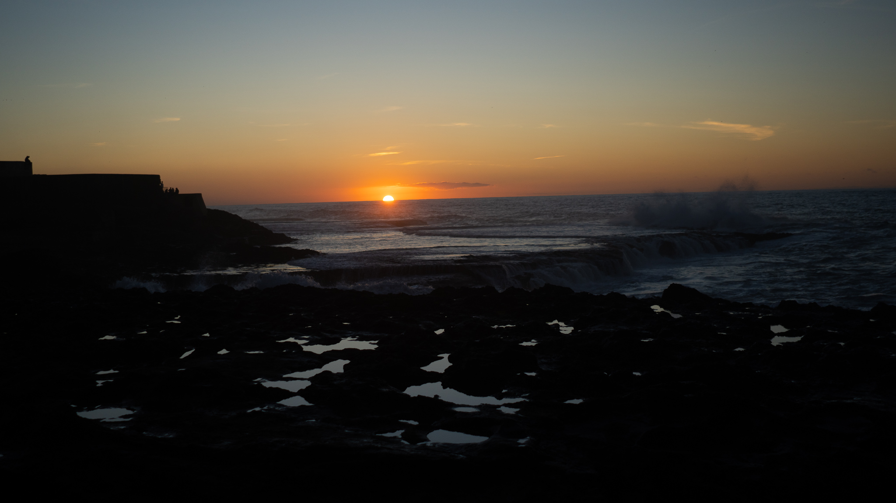
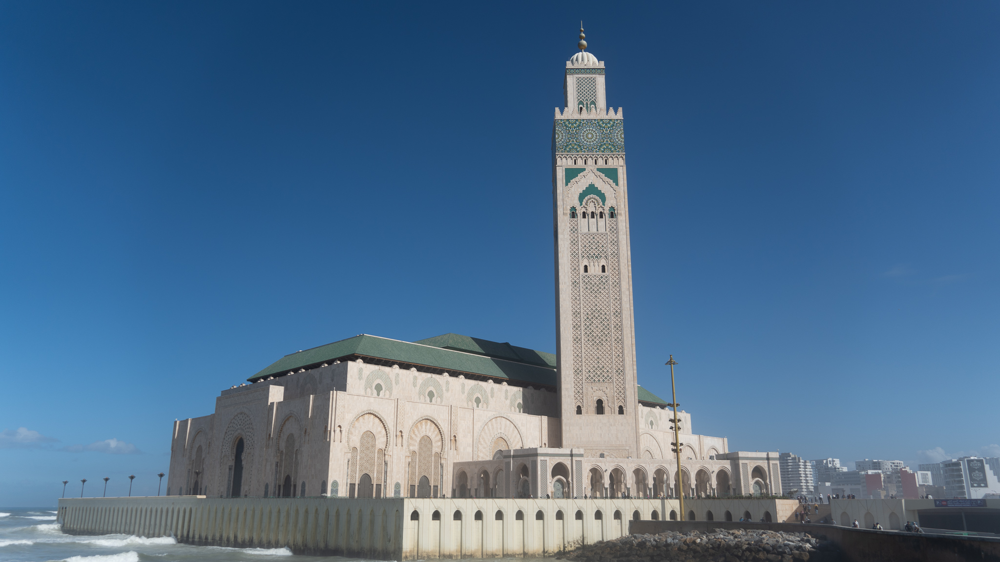
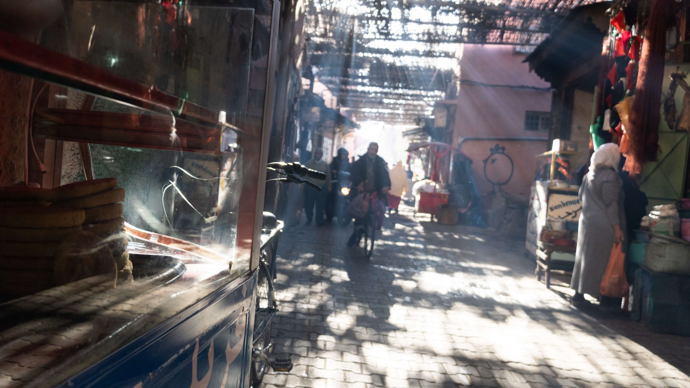

Every city in Morocco can be broken down into four main parts based on the history of development in these cities. The first is the medina, which is Arabic for old city. This can be recognized by its narrow streets that are mostly closed to cars. The second is the colonial area, which is denoted by a heavy influence by French architecture. In these parts, it can feel like you are walking around Paris. Then there is the post-colonial area, denoted by industrial style buildings. Lastly is the modern area, comprised of glass and steel buildings. These areas are typically more affluent areas and feature American influences like McDonalds and Starbucks. Although there are common threads, every city in Morocco has its own unique story, vibe, and influence. Below is a description of five major cities in Morocco.
Tanger
The international city
Spelt "Tangier" in English, this city lies on the very northern edge of Morocco. It is known for its heavy Spanish influence, from Spanish style bars to easy access to Spanish paella. From the Tanger port, you can see Spain and Gibraltar across the strait. The easy access to Europe makes this city a hot spot for tourists. It is the last stop on Morocco’s high-speed train, allowing travelers to get around the country quickly, reliably, and cheaply.

Rabat
The governmental capital
Rabat is the governmental capital of Morocco. It is smaller than the other cities on this list, giving it a much more laid-back feel. The city sits on the Atlantic Ocean and has become a home for Moroccan surfers. Rabat does not have a ton of tourist accommodations, including a lack of bars or high-end restaurants. This city draws less tourists, but it is filled with amazing attractions. The Al-Hassan mosque features the unfinished remains of an ancient structure. A one-dollar boat ride can take you across the river to Salé, a much more populous, residential city.

Casablanca
The economic capital
Morocco’s largest city and economic capital, Casablanca (or Casa as Moroccan’s refer to it), is a bustling metropolis. It is filled with bars, restaurants, shopping malls, and universities. Morocco Mall, Africa’s largest mall, is just a 20-minute drive south of Casablanca. The Casablanca beaches are usually crowded but can be a much-needed relief from the city heat. Al Riad, the city’s wealthy area, is home to 5th Avenue style shopping plazas. Casablanca is also home to Morocco’s only Jewish community. Jewish-style bakeries fill that quarter of the city.

Marrakech
The top tourism destination
Morocco’s most visited city, Marrakech receives over 50 million visitors a year. High levels of tourism mean that prices in this city are elevated, but there is still a liveliness to this city that doesn’t exist anywhere else in Morocco. El Jemma, the main square there, lights up at night with food booths. Men dressed in white coats advertise their restaurants, others sell trinkets, and others perform song and dance. The square is an amazing sight, and rooftop cafés surrounding the square offer amazing views of the happenings below. Attractions like the Yves Saint Laurent Museum offer plenty to do throughout the day.